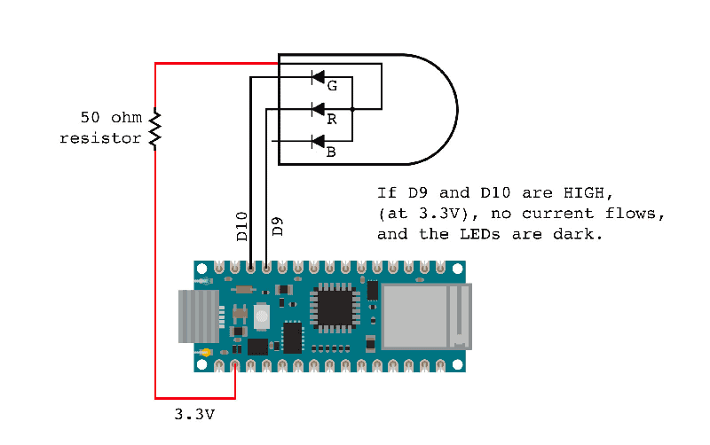

Sometimes projects are born from ideas that sprout and keep growing until you pluck them out and do something with them. A friend mine calls these brain weeds. Other times, projects are born out of need.
The Internet of Skull is the latter kind of project.
I live in a neighborhood with an internet provider of so-so quality. When the service works, it works well, but it goes down more often than it seems like it should for the $75 a month I have to pay for it. The ISP is also notoriously bad at communicating, often only admitting to an outage after the outage has already been fixed.
If the internet goes out in the middle of the day and the weather is nice, I will just go outside for a while. Maybe I'll ride my bike or maybe I'll go to the park and read. But if the internet goes down at night or on a rainy day and I'm stuck inside, I find myself sitting around and waiting for the internet to come back on. Last time that happened, I sat there, frustrated and repeatedly refreshing a page in my browser like a rat pressing a lever and hoping for sugar water.
Then I had a thought. When the power goes out at my house, which also happens more often than it seems like it should, I can tell when the power comes back on because my microwave beeps. It's such a simple cue. Why doesn't something like that exist for my internet?
I started searching around online for an internet status monitor project I could copy and stumbled on this one by Eli the Computer Guy.
His is a simple design. A Wi-Fi-enabled Arduino Uno connects to his home network and attempts to ping google.com. Since Google's website is pretty reliably online, it can be fairly safely assumed that a successful ping means you have an internet connection, and an unsuccessful ping means you don't. As a simple visual indicator, he wired the Arduino with a red LED and a green LED. Green means there's an internet connection. Red means there's not.
I didn't have an Arduino Uno WiFi, but I did have an Arduino Nano 33 IoT, which is also capable of connecting to a Wi-Fi network, so I used that as the basis for this project. I liked Eli's red/green status indicator idea, so I decided to do that as well. Originally I intended to make the project beep when the internet comes back on, but the more I thought about it, the more I wondered if that's what I really wanted. What if the internet goes out at 2 a.m. and comes back at 3:15? Do I want to be awoken for that? Not really, so I dropped the buzzer idea from the project.
I originally meant to make this as a basic little box, maybe kind of resembling a traffic light, but that seemed boring to me. I was staring at the shelf where the project was going to sit, which is the closest spot in my house to the wireless router and trying to think about what would look good there. That shelf is coincidentally also my shelf of skulls. Then it occurred to me: I really need an internet-connected skull in my life.
I chose a realistic, but fake cat skull I had in my collection because I felt less bad about gluing stuff to it than I would doing the same to any of my real skulls As an interesting aside, I’ll mention that the skull was 3D printed for me by Tinkerz over on Twitter out of some special filament that is designed to mimic bone on X-rays. It feels kind of like bone as well, or at least it feels more boney than typical 3D prints.
To give the project a kind of brain-in-a-jar feel while hiding the Arduino, I stuffed everything inside a security camera housing I found by a homeless camp down in the river bed near my home. To make the skull's "eyes" change color, I used a pair of RGB LEDs I dug out of my stuff in the garage and put them inside a pair of round diffusers that came off a dollar-store LED sign. I used all red wiring to make the connections to the LED eyes look like muscle or sinew or nerves, or something biological like that.
My decision to use RGB LEDs came with a small problem that I had to sort out. Eli's project connects the LEDS between two GPIO pins and ground. To turn an LED on, it sets one of those pins to HIGH and current flows from the pin, through the LED to ground. With most RGB LEDs, this would be fine, because they are designed so the red, green, and blue elements (dies) share a ground and have separate positive leads. However, the LEDs I chose were common anode, which means the red, green, and blue dies inside the LED share a positive lead and have separate grounds.
Fortunately there's a pretty simple solution to this. An Arduino's GPIO pins can both source and sink current, meaning they can output a voltage to ground, or they can accept a voltage from the Arduino's power rail. So, to use common-anode LEDs, we just connect their positive lead (the anode) to the Arduino's 3.3V pin and their negative leads (the cathodes) to two GPIO pins. For an explanation of how to wire common-cathode and common-anode LEDS, visit: Physical Computing - Lesson 6: RGB LEDs
It turned out that Eli's code didn't work quite right in my project. It connected to the internet like it should, and it pinged Google like it should, but when I disconnected my home network from the internet, the Arduino would only indicate a ping failure once before erroneously indicating that it was successfully pinging Google again. It did this even if there was no internet connection. Some folks in the Arduino forums suggested that there are some problems with the WifiNINA, but I never did figure out why the code didn't work the way it was supposed to. My friend Aucoeur Ngo couldn't figure out either, but she helpfully rewrote the code to use a different function of the WiFiNINA library that actually did work correctly. You can get that code from my Github repository or find it pasted below, after the final thoughts section.
This was a dumb little project that may be kind of useful. The more I think about it, the more I think it needs an audio alarm for when the internet comes back on. Right now, if I decide to read a book or I go in the other room, I won't know if the internet is back without actually looking at the Oracle. A buzzer would let me know without me having to pay active attention, and I could just add a switch to disconnect the buzzer if I don't want it to bother me while I sleep. Or I could just turn the thing on only when I'm having an internet outage. We'll see. It would only take a few lines of code and maybe 10 minutes of soldering.
I might also change my mind about the color I painted the enclosure. I first painted it a safety yellow color like you might see on industrial equipment but then I repainted with a green hammertone finish. I think I liked the yellow better though, so I might repaint it again.
/*This project requires an Arduino Nano 33 IoT.
Arduino sells other Wi-Fi enabled Arduinos that
may work, but I've not tested them with this code.
It was pieced together from some other bits of code,
mostly by Aucoeur Ngo, who was helpfully helping me
troubleshoot why my code wasn't working
https://stine.omg.lol/
*/
#include
/*wire LEDs to pins 9 and 10 with appropriate resistors.
This should be about 40-50 ohms for an Arduino with
3.3V output on its IO pins*/
#define googleOnlineLED 10
#define googleOfflineLED 9
//your wifi credentials go here
char ssid[] = "network name";
char pass[] = "password";
int status = WL_IDLE_STATUS;
//put whichever reliable website you want right here
char google[] = "google.com";
WiFiClient client;
void setup() {
pinMode(googleOnlineLED, OUTPUT);
pinMode(googleOfflineLED, OUTPUT);
digitalWrite(googleOnlineLED, LOW);
digitalWrite(googleOfflineLED, LOW);
/*all the serial comms stuff can be removed, but it's
helpful for troubleshooting*/
Serial.begin(9600);
while (status != WL_CONNECTED) {
Serial.print("Attempting to connect to Network named: ");
Serial.println(ssid);
status = WiFi.begin(ssid, pass);
delay(10000);
}
Serial.print("SSID: ");
Serial.println(WiFi.SSID());
IPAddress ip = WiFi.localIP();
IPAddress gateway = WiFi.gatewayIP();
Serial.print("IP Address: ");
Serial.println(ip);
Serial.print("Default Gateway: ");
Serial.println(gateway);
}
void loop() {
Serial.print("status before client.stop(): ");
Serial.println(client.status());
client.stop();
Serial.print("status after client.stop(): ");
Serial.println(client.status());
if (client.connect(google, 80)) {
Serial.print("status inside if client.connect(): ");
Serial.println(client.status());
Serial.print("Google is ONLINE at: ");
Serial.println(client.remoteIP());
digitalWrite(googleOnlineLED, LOW);
digitalWrite(googleOfflineLED, HIGH);
}
else {
Serial.print("status inside else client.connect(): ");
Serial.println(client.status());
Serial.println("Google is OFFLINE");
digitalWrite(googleOnlineLED, HIGH);
digitalWrite(googleOfflineLED, LOW);
}
delay(2000);
}